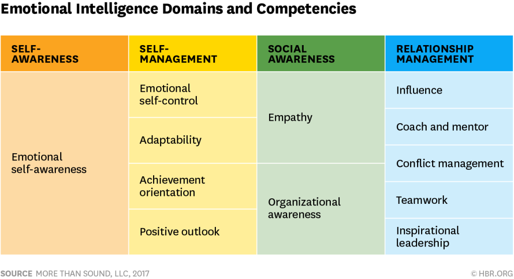

Emotional Intelligence
9 July 2022My Flop
A couple of weeks ago I was met with a deadline to make an important decision. This decision would have current and future implications for myself and my family. It was one of those complex scenarios where there wasn't really an absolute right or absolute wrong decision. The challenge was optimization and I spent many days thinking about the matter at hand logically.
Just the day before submission, I had come to my logically-derived decision. My wife approved it. It was set to go. I sent the documents to the admin team for some tidying up.
Before bed that night, I thought it would be wise to do a last-minute sanity check with a so-called expert. This person gave me her thoughts which unfortunately harbored doubt, fear, and anxiety in my heart. I couldn't sleep.
The next morning, I jumped out of bed and rushed to tell my wife that I was going to change the decision and submission. My body was tense. My pulse was racing. I was catastrophizing the decision that I had made earlier. She tried to calm me down and encouraged me to take a walk for some fresh air. "You don't understand!" was the bark that she got in response.
Like an unstoppable train-wreck. I pushed through the changes - a scenario that was the absolute opposite of my original decision that I spent days of careful consideration on. And just like that, I made a big life decision that impacts my family while being hijacked by my emotions. Almost immediately, I regretted it. I knew I had screwed up.
I am known to be my worst critic so I have been punishing myself in the head for this. Only time can judge whether my decision was right or wrong. However, it is obvious that I still need to work on my emotional intelligence both in dealing with external pressure and with how I judge myself after a mistake.
Why couldn't I just stay composed and stick with my original well-considered decision?
EI and IQ
Emotions are often confused with feelings and moods, but the three terms are not interchangeable. According to the American Psychological Association (APA), emotion is defined as “a complex reaction pattern, involving experiential, behavioral and physiological elements.” Emotions are how individuals deal with matters or situations they find personally significant. Emotional experiences have three components: a subjective experience, a physiological response, and a behavioral or expressive response.
The key reminder here is there are both inputs and outputs.
Emotional intelligence (EI) is most often defined as the ability to perceive, use, understand, manage, and handle emotions. To be emotionally intelligent, one needs to be able to process the inputs and produce an output that is productive and useful to one's true, preferably good, objectives.
Daniel Goleman defines EI as the array of skills and characteristics that drive leadership performance and performance in the workplace. According to him there are 5 key elements to EI:
- Self-awareness
- Self-regulation
- Motivation
- Empathy
- Social skills
IQ, short for intelligence quotient, was originally a standardized test to assess human intelligence. However, in society, the term IQ right now is commonly used to describe someone's capacity for intellectual, logical, and critical reasoning.
It is that capacity for logic that we use as we learn math and process data. It is the switch we try to turn on when we knock our heads as we try to learn JavaScript functions and syntaxes for the first time.
Our human intelligence is hosted in the neocortex part of our brain. Our emotions largely are processed and triggered in the more "ancient" part of our brains where our flight or fight responses reside.
The rider and the elephant
If the rider is reasoning, then the elephant in the emotion. The rider gives the best effort to direct the elephant and show where we're heading. But the rider will always have limited control of what the elephant does. EI is important because the rider will not reach the destination safely on a wounded elephant nor on a tired and suppressed elephant with blindfolds.
EI is important because at the end of the day we are all still humans living in complexity and information velocity that is exponentially growing. First and foremost, we need to stay sane and maintain our well-being. But also, regardless of our working lifestyle, inevitably we have to work with other humans. Humans are both logical and emotional beings. In order for us to coexist and collaborate to create a productive workplace and hopefully a better world, well, we need to learn to get along better.
Lifelong learning and addressing gaps
As someone who has always been confident about my IQ and EI, the event I shared with you at the beginning of this blog has been a reminder of the need for continuous growth.
Referring to one of Goleman's later models, I am reminded that my intuitive grasp of social awareness and relationship management does not mean that I don't have work to do to improve on my self-awareness and self-management. Also, just because I have been in spiritual or emotional recovery for 4.5 years, it doesn't mean I am free from my negative childhood conditioning.
Similarly, being a former executive at Bloomberg or former founder of a tech startup does not mean I can code or understand it easily. I must grow in both EI and EQ as a lifelong student.
I wanted to approach this blog with some degree of originality. So instead of borrowing from others, I want to give you my own tips for improving your EI:
- Have enough sleep; Reset
- Exercise
- Be grateful for the good things in your life, say thank you
- You don't have to forget but forgive everything, everyone, every time - including yourself
- Keep a beginner's mindset and a listening ear
- Assume humans are innately good
- Meditate or pray
- Play - especially with others
- Don't be afraid to ask for help and don't be afraid of rejection
- One day at a time
Sources
- What is IQ — and how much does it matter?
- What People (Still) Get Wrong About Emotional Intelligence
- Emotional Intelligence From Wikipedia, the free encyclopedia